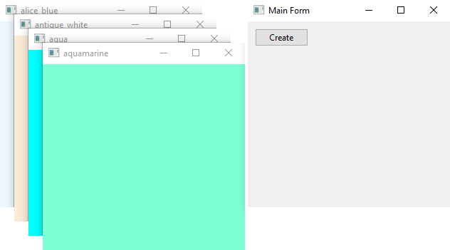
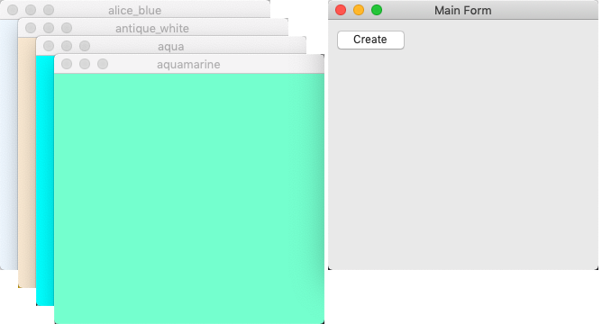
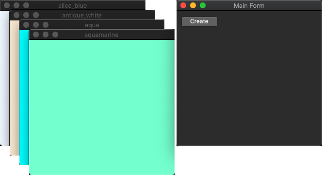
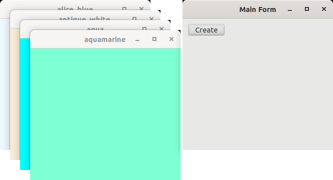
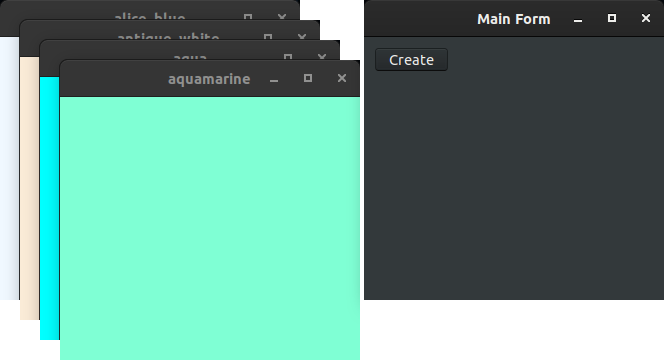

|
xtd
0.2.0
|
Loading...
Searching...
No Matches
colored_forms.cpp
demonstrates the use of xtd::forms::form control with unicode text.
- Windows
- 

- macOS
- 

- Gnome
- 

#include <vector>
#include <xtd/xtd>
using namespace std;
using namespace xtd;
using namespace xtd::drawing;
using namespace xtd::forms;
auto main()->int {
auto form_main = form::create("Main Form", point {screen::primary_screen().working_area().width() - 340, 40});
form_main.start_position(form_start_position::manual);
static vector<shared_ptr<form>> forms;
static auto form_color = known_color::alice_blue;
form_color = form_color != known_color::yellow_green ? known_color(int(form_color) + 1) : known_color::alice_blue;
};
application::run(form_main);
}
Represents an ordered pair of integer x- and y-coordinates that defines a point in a two-dimensional ...
Definition point.h:54
virtual const xtd::ustring & text() const noexcept
Gets the text associated with this control.
event< control, event_handler > click
Occurs when the xtd::forms::control is clicked.
Definition control.h:1151
virtual drawing::color back_color() const noexcept
Gets the background color for the control.
Represents a window or dialog box that makes up an application's user interface.
Definition form.h:49
control & visible(bool visible) override
Sets a value indicating whether the control and all its child controls are displayed.
The xtd::drawing namespace provides access to GDI+ basic graphics functionality. More advanced functi...
Definition basic_colors.h:13
The xtd::forms namespace contains classes for creating Windows-based applications that take full adva...
Definition debug.h:20
The xtd namespace contains all fundamental classes to access Hardware, Os, System,...
Definition system_report.h:17
Generated on Tue Jul 4 2023 20:52:03 for xtd by Gammasoft. All rights reserved.